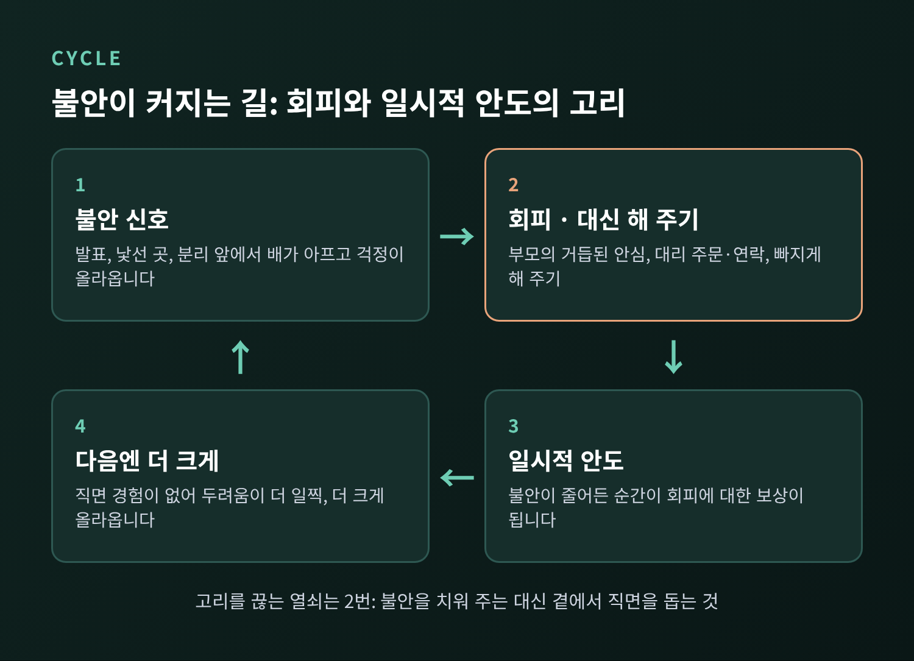
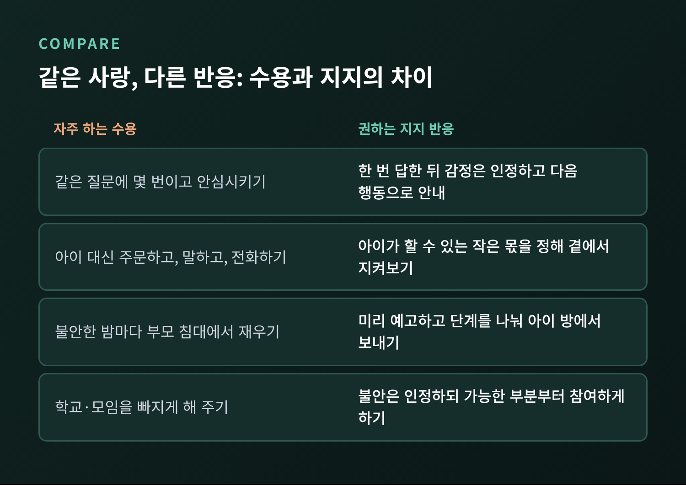
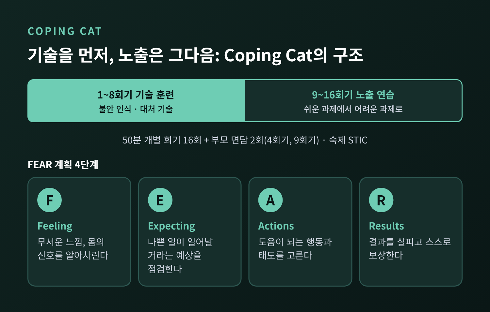
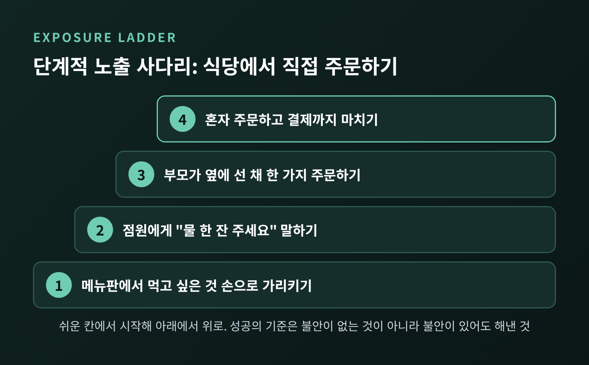
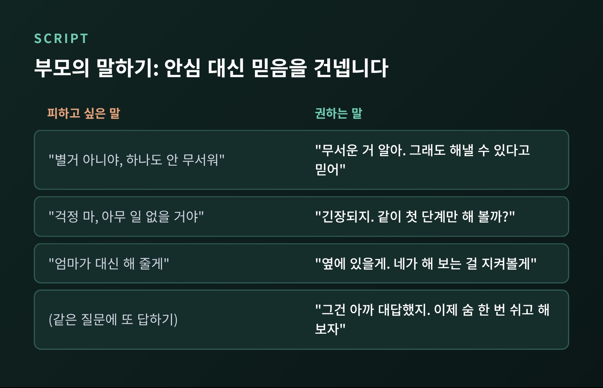

아이 불안과 회피의 악순환 — 부모의 과잉 안심은 왜 불안을 키울까

세 줄 요약
-
불안한 아이를 돕겠다는 마음에서 나온 대신 해 주기와 거듭된 안심시키기는, 의도와 달리 회피를 굳히는 쪽으로 작동할 수 있습니다. 연구에서는 이를 가족 수용(family accommodation)이라 부릅니다.
-
아동 불안 CBT인 Coping Cat은 기술을 먼저 익히고 단계적으로 직면하게 하며, 부모만 참여하는 SPACE 연구는 부모의 반응을 바꾸는 것만으로도 아이가 나아질 수 있음을 보여 주었습니다.
-
핵심은 불안을 없애 주는 것이 아니라 "무섭지만 해낼 수 있다"는 메시지를 말과 행동으로 전하는 것입니다.
이번 글에서는 아이의 불안이 회피를 통해 커지는 과정과, 그 고리에 부모의 도움이 끼어드는 방식을 정리해 보려 합니다. 이어서 Coping Cat과 가족 수용 연구가 말하는 것, 집에서 해 볼 수 있는 단계적 노출과 부모의 말하기를 살펴보겠습니다.
■ 불안이 커지는 길은 대개 회피를 지납니다
초등 3학년 아이가 발표 전날 배가 아프다고 합니다. 부모는 걱정이 되어 "괜찮을 거야"를 몇 번이나 말해 주고, 결국 선생님께 연락해 발표를 다음 기회로 미룹니다. 아이는 그날 밤 편안히 잠듭니다. 이것은 특정 가정이 아니라 상담 현장에서 흔히 그려지는 일반화된 장면입니다.
여기서 눈여겨볼 대목은 그다음입니다. 아이의 머릿속에는 "발표는 위험한 일이었고, 피했더니 괜찮아졌다"라는 경험이 남습니다. 불안이 줄어든 순간이 곧 회피에 대한 보상이 됩니다. 다음에 비슷한 상황이 오면 불안은 더 일찍, 더 크게 올라옵니다.
회피의 대가는 이렇게 쌓입니다. 두려운 상황을 겪어 보지 못하니 "생각보다 견딜 만하다"는 증거를 얻을 기회가 없고, 스스로 해냈다는 경험도 쌓이지 않습니다.

■ 가족 수용, 사랑에서 나온 도움이 고리가 될 때
연구자들은 부모가 아이의 불안으로 인한 고통을 줄이려고 자신의 행동을 바꾸는 것을 가족 수용이라 부릅니다. 하는 일뿐 아니라 일부러 하지 않는 일, 가족의 일상을 바꾸는 것까지 포함합니다(Norman, Silverman & Lebowitz, 2015).
흔한 예는 이렇습니다.
-
같은 질문에 몇 번이고 안심시키는 말을 해 주기
-
아이 대신 주문하고, 대신 말하고, 대신 전화하기
-
불안한 밤에 부모 침대에서 재우기
-
학교나 모임을 빠지도록 도와주기
규모는 생각보다 큽니다. Kagan, Frank, Kendall(2018) 리뷰를 소개한 글에 따르면, 불안장애 아동 부모의 97%가 어떤 형태로든 수용을 보고했고 대부분은 하루 한 번 이상이었습니다. 부모의 약 80%는 그 과정에서 스트레스를 느낀다고 답했습니다. 거의 모든 부모가 하는 일이라는 뜻이니, 특별히 잘못된 양육의 증거가 아니라는 점을 먼저 말씀드리고 싶습니다.
수용이 많을수록 증상이 심하고 일상 기능이 떨어지며 치료 효과가 약한 경향도 보고됩니다. 다만 이 연관의 방향은 분명하지 않습니다. 아이가 많이 불안하니 부모가 더 도와주게 되는 면도 있기 때문입니다. 부모의 통제와 아동 불안을 다룬 23개 연구(부모-자녀 1,305쌍) 메타분석에서도 둘의 연관은 컸지만(d = .58), 연구진은 어느 쪽이 원인인지는 알 수 없다고 적었습니다(van der Bruggen 외, 2008). 그래서 "부모가 불안을 만든다"가 아니라 "서로를 키우는 고리"라고 이해하시는 편이 정확합니다.

■ Coping Cat, 기술을 익힌 뒤 단계적으로 마주합니다
아동 불안 CBT의 대표 프로그램인 Coping Cat은 Philip Kendall과 동료들이 Temple 대학교 클리닉에서 개발했습니다. 7~13세를 대상으로 하며, 약 50분 개별 회기 16회에 부모 면담이 두 번(4회기, 9회기) 들어갑니다. 앞의 8회기는 불안을 알아차리고 다루는 기술을 익히는 단계이고, 뒤의 8회기는 그 기술로 실제 도전 과제에 부딪혀 보는 노출 단계입니다. 숙제인 STIC(Show That I Can) 과제를 통해 일상에서도 연습합니다.
핵심 도구는 네 단계의 FEAR 계획입니다.
-
F: 무서운 느낌, 몸의 신호를 알아차린다
-
E: 나쁜 일이 일어날 것이라는 예상이 맞는지 따져 본다
-
A: 도움이 되는 행동과 태도를 고른다
-
R: 결과를 살피고 스스로 보상한다
순서가 중요합니다. 기술 없이 곧바로 직면시키지 않고, 몸의 신호를 읽고 생각을 점검하는 도구를 먼저 손에 쥐여 줍니다. 그다음 쉬운 과제에서 어려운 과제로 올라갑니다.
효과 근거도 있습니다. 7~17세 488명이 참여한 다기관 연구(CAMS, Walkup 외, 2008)에서 12주 뒤 개선 비율은 CBT와 sertraline 병용 81%, CBT 단독 60%, sertraline 단독 55%, 위약 24%였습니다. 같은 표본의 약 6년 추적에서는 46.5%가 관해 상태였다는 보고가 있습니다(CEBC 요약). 한 장기 추적 연구(66명, 평균 약 16년)에서는 치료 직후 주진단이 사라진 사람들이 성인기에 일반 인구와 비슷한 수준을 보인 항목이 많았습니다. 다만 이 연구는 전향적 설계가 아니었고 표본도 대체로 백인 중상류층이어서 해석에 조심이 필요합니다.

■ 부모만 바뀌어도 아이가 나아질 수 있을까
가족 수용 연구에서 가장 흥미로운 결과는 SPACE(Supportive Parenting for Anxious Childhood Emotions)입니다. Eli Lebowitz 연구팀이 개발한 이 프로그램은 부모만 참여하고, 아이는 치료실에 오지 않습니다. 부모는 자신이 어떤 수용을 하고 있는지 기록하고, 하나씩 천천히 줄이며, 아이의 고통을 인정하면서 대처 능력에 대한 믿음을 전하는 법을 연습합니다.
2020년 발표된 무작위 비열등성 시험(Lebowitz 외)은 7~14세 124명을 SPACE와 아동 개별 CBT에 나눠 각각 12회기를 진행했습니다. 독립 평가자 기준으로 두 집단 모두 약 60%가 더 이상 어떤 불안장애 진단도 충족하지 않았고, 유의한 호전은 SPACE 87.5%, CBT 75.5%였습니다. 수용은 두 집단 모두 줄었지만 SPACE 쪽에서 더 크게 줄었고, 양육 스트레스도 함께 줄었습니다.
해석에는 선을 그어 두겠습니다. 비열등성 시험이므로 "부모 치료가 CBT보다 낫다"는 결론은 아닙니다. 124명 가운데 97명이 모든 회기와 평가를 마쳤고, 한국 아동을 대상으로 한 결과는 이번에 확인하지 못했습니다. 그럼에도 부모의 반응이 치료의 한 축이 될 수 있다는 점은 분명히 보여 줍니다.
■ 집에서 해 볼 수 있는 단계적 노출
수용을 한꺼번에 끊으라는 이야기가 아닙니다. 수용을 줄이는 초기에 아이의 불안이나 분노가 일시적으로 커질 수 있다는 보고도 있습니다(Norman 외, 2015). 작게, 미리 알리고, 함께 정하는 편이 안전합니다.
1단계. 아이의 두려움을 관찰하고 목록을 만듭니다. 아이가 피하는 상황, 부모가 대신 해 주는 일을 적어 봅니다.
2단계. 쉬운 것부터 사다리를 만듭니다. 예를 들어 식당에서 직접 주문하기가 목표라면 이렇게 쌓을 수 있습니다. 메뉴판에서 먹고 싶은 것을 손으로 가리키기, 점원에게 물 한 잔 부탁하기, 부모가 옆에 서 있는 상태에서 한 가지 주문하기, 혼자 주문하기. 아이가 "이 정도면 해 볼 수 있다"고 느끼는 단계에서 시작합니다.
3단계. 불안이 있어도 그 자리에 충분히 머뭅니다. 중간에 빠져나오면 회피가 다시 보상받기 쉽습니다. 성공의 기준은 불안이 없어지는 것이 아니라 불안이 있어도 해냈다는 점입니다.
4단계. 결과를 함께 돌아보고 인정합니다. "생각한 만큼 나빴니?"처럼 예상과 실제를 비교해 보면 FEAR 계획의 E와 R 단계를 가정에서 이어 갈 수 있습니다.

■ 부모의 말하기, 안심 대신 믿음을 건넵니다
거듭된 "괜찮아, 아무 일 없을 거야"는 순간의 불안을 낮추지만, 아이에게 "나는 이 불안을 혼자 못 견딘다"는 신호를 남길 수 있습니다. SPACE를 소개한 글은 지지 진술의 예로 "그건 별로 무서운 게 아니야" 대신 "무서웠겠구나. 그래도 괜찮을 거라고 나는 믿어"를 듭니다. 고통은 인정하고, 대처 능력은 믿어 주는 두 가지가 한 문장에 들어 있습니다.
아래는 이 원리를 일상으로 옮긴 예시입니다. 연구에 나온 정해진 대본이 아니라 필자가 구성한 문장이니, 아이와 가정에 맞게 바꿔 쓰시길 권합니다.

반복되는 안심 요구에는 이런 방식이 도움이 됩니다. 처음에는 정성껏 한 번 답합니다. 같은 질문이 또 오면 "그 질문엔 아까 대답했지. 네가 불안하다는 건 알아. 같이 심호흡하고 첫 단계를 해 볼까?"처럼, 답을 되풀이하는 대신 아이의 감정을 인정하고 다음 행동으로 이끕니다. 아이가 해낸 뒤에는 결과보다 시도를 먼저 알아봐 주세요. "무서웠는데도 해냈네"가 가장 좋은 보상입니다.
■ 전문가의 도움이 필요한 신호
다음에 해당한다면 혼자 해결하려 하지 말고 소아청소년정신건강의학과나 아동 상담 전문가와 상의하시길 권합니다.
-
불안이 몇 주 이상 이어지고 등교, 수면, 식사, 친구 관계에 뚜렷한 지장이 있을 때
-
수용을 줄이려 하자 아이가 심하게 폭발하거나, 자해를 암시하는 말을 할 때
-
부모 스스로도 불안이나 우울이 커서 아이 앞에서 버티기 힘들 때
이 글은 일반적인 정보 제공이며 진단이나 치료를 대신하지 않습니다. 아이마다 상황이 달라 전문가의 평가가 필요합니다. 아이가 자신을 해치겠다는 말을 하거나 위험이 급하다고 느껴지면 지체하지 말고 가까운 응급실이나 정신건강 위기상담 전화(국번 없이 1577-0199, 자살예방 109)로 연락하시기 바랍니다.
정리하면 이렇습니다.
아이의 불안을 부모 탓으로 돌릴 수는 없습니다. 다만 사랑에서 나온 도움이 때로 불안이 머물 자리를 넓혀 줄 수 있습니다. 불안을 대신 치워 주는 대신 "무섭지만 너는 해낼 수 있다"고 말하며 한 계단씩 곁에서 걸어 주는 일. 그것이 이 연구들이 가리키는 방향입니다.
아이가 처음으로 혼자 주문을 마치고 돌아서며 슬쩍 웃던 날, 그 얼굴을 기억하게 되신다면 충분히 잘하고 계신 것입니다.
참고 문헌
-
Norman KR, Silverman WK, Lebowitz ER (2015). Family accommodation of child and adolescent anxiety. J Child Adolesc Psychiatr Nurs 28(3).
-
Lebowitz ER et al. (2013). Family accommodation in pediatric anxiety disorders. Depress Anxiety 30(1).
-
Lebowitz ER, Marin C, Martino A, Shimshoni Y, Silverman WK (2020). Parent-based treatment as efficacious as CBT for childhood anxiety. J Am Acad Child Adolesc Psychiatry 59(3).
-
Walkup JT et al. (2008). CBT, sertraline, or a combination in childhood anxiety. N Engl J Med.
-
van der Bruggen CO, Stams GJJM, Bögels SM (2008). J Child Psychol Psychiatry 49(12).
-
Kagan ER, Frank HE, Kendall PC (2018), APS Observer 소개 글 경유.